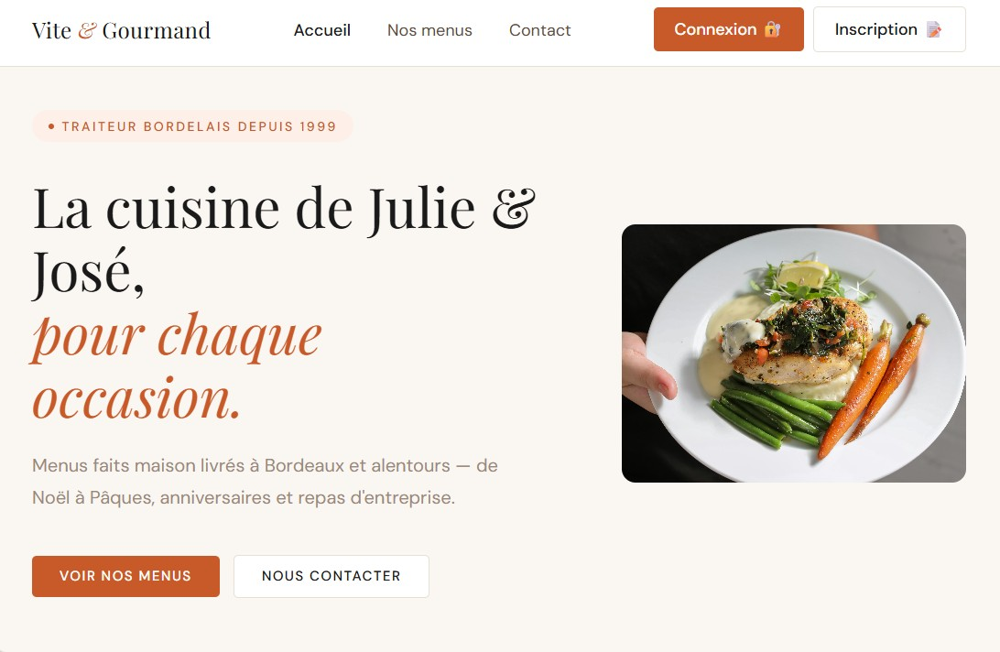
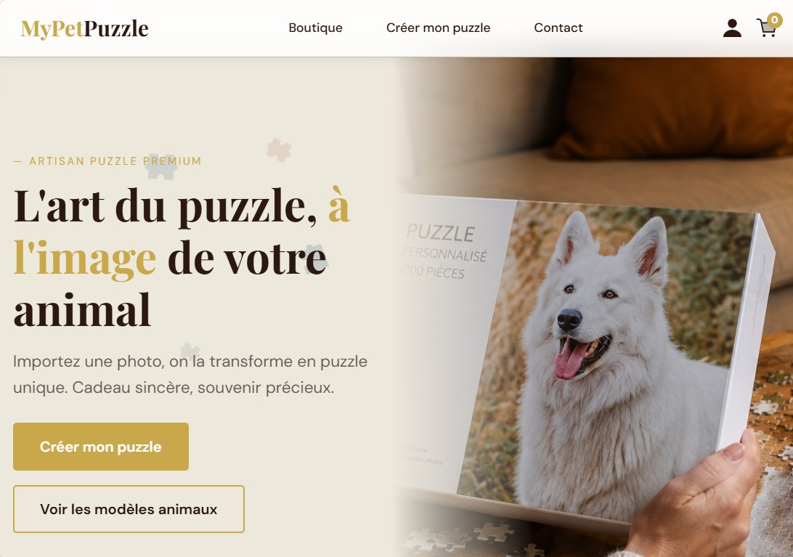
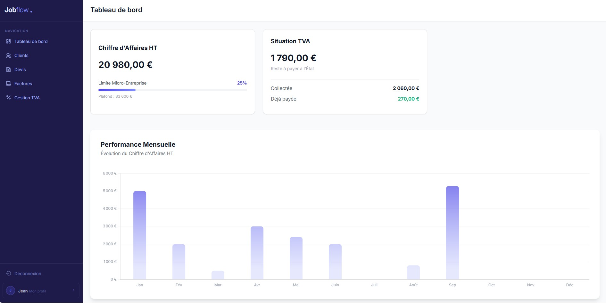
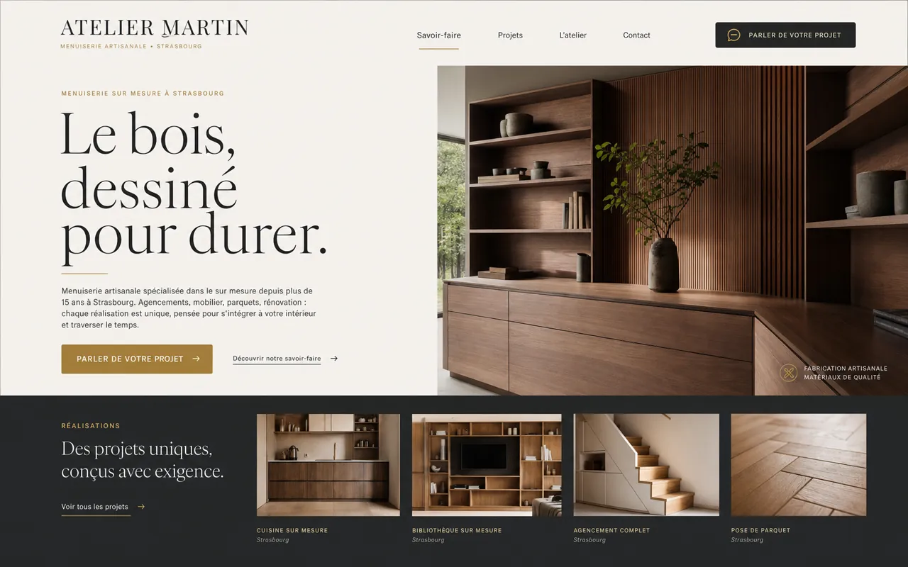
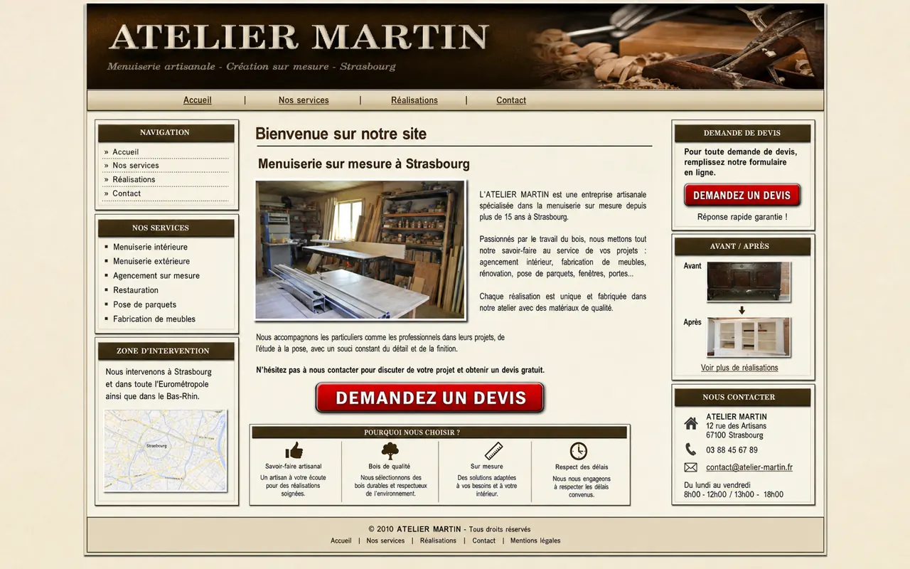

Diagnostic Le vrai besoin
On part du problème à résoudre.
Votre activité, vos clients, vos outils et le résultat concret que la solution doit produire.
Ce qui rassureUn périmètre et un devis sans jargon.
Sites professionnels, e-commerce et automatisations sur mesure : je construis des expériences qui donnent confiance et des outils qui simplifient réellement votre activité.
Les offres Sites web & outils métier
Présenter votre activité, obtenir davantage de demandes, vendre en ligne ou automatiser une tâche répétitive : chaque projet part d’un problème concret et se termine par une solution exploitable.
Le prix de départ correspond à une landing page sur mesure : idéale pour un artisan, un indépendant ou une entreprise avec une offre claire.
Le prix de départ couvre une automatisation simple entre deux outils : enregistrer une demande, envoyer une confirmation, prévenir la bonne personne ou créer un suivi.
Une boutique WooCommerce ou une interface métier construite autour de vos produits, de vos utilisateurs et de vos règles. Le prix dépend toujours du périmètre.
Offre de lancement Faites partie des premiers
Jusqu’à −50 %Un tarif de lancement, la même exigence.
Tarifs réservés aux premiers projets
AlexBuild lance son activité freelance. Les premiers projets bénéficient d’un tarif réduit, avec le même travail de fond : diagnostic, conception, développement, tests et accompagnement direct jusqu’à la mise en service.
Projets réalisés La preuve par le travail
Site métier, boutique personnalisée ou outil sur mesure : découvrez les expériences que je peux concevoir selon votre activité et vos objectifs.

Site métier · restauration
Une présence métier pensée pour présenter l’offre et rendre la commande évidente. Ce projet montre ma capacité à transformer un service local en parcours web simple.

WordPress · WooCommerce · personnalisation
Une expérience e-commerce autour d’un produit personnalisé. Le projet met en avant la gestion d’un parcours d’achat, du choix de l’image jusqu’à la commande.

PHP · JavaScript · MySQL
Un outil de gestion construit sur mesure. Il démontre ma capacité à aller au-delà d’un site vitrine et à organiser une logique métier dans une interface utilisable.
Votre site existe déjà ? On peut le faire mieux
Nouveau design, meilleure version mobile, performances, UX, SEO technique ou migration : la refonte part de ce qui existe et améliore ce qui compte.


Démonstration visuelle sur une entreprise fictive.
Refonte sur devis · l’offre de lancement peut s’appliquer selon le périmètre.
Au-delà du site Automatisation métier
Votre client remplit un formulaire. La demande est contrôlée, qualifiée et enregistrée. Le client reçoit une réponse, votre équipe est prévenue et une relance se prépare sans copier-coller.
Diagnostic gratuit Pour un site existant
Indiquez votre site. L’interface prépare les points que je contrôlerai ensuite personnellement. Aucun faux score, aucun résultat inventé.
Préparer le diagnostic
Saisissez simplement son adresse, avec ou sans https://.
Cette étape organise votre demande. Elle ne lance pas encore d’analyse technique automatisée.
Construction de la grille
Préparation des points de contrôle…
Demande prête
Indiquez votre e-mail. Je recevrai l’adresse du site et je réaliserai ensuite la vérification réelle.
Demande transmise
La grille est prête et votre demande est bien arrivée. Je vais aussi regarder votre site personnellement afin de compléter le diagnostic avec un œil humain.
Vous recevrez mon retour sous 24 à 48 h maximum.Votre projet La prochaine étape
Vous faites partie des premiers projets AlexBuild : votre demande sera étudiée avec les tarifs de lancement pouvant aller jusqu’à −50 %.
dev@alexbuild.fr